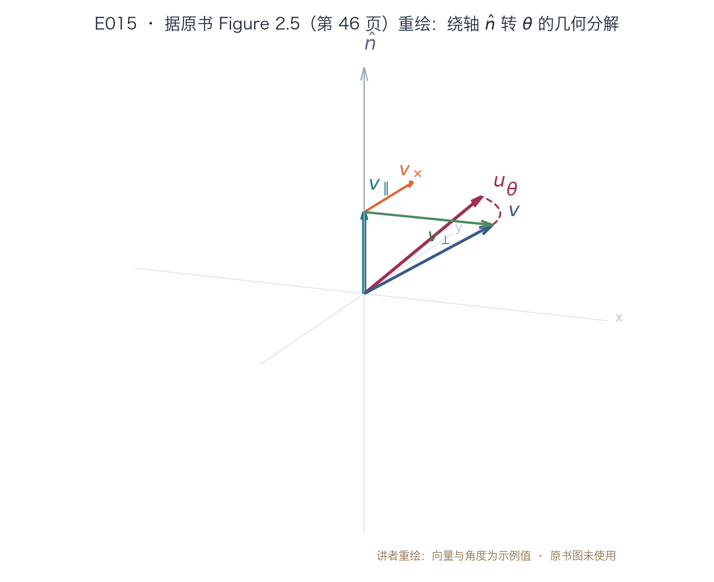
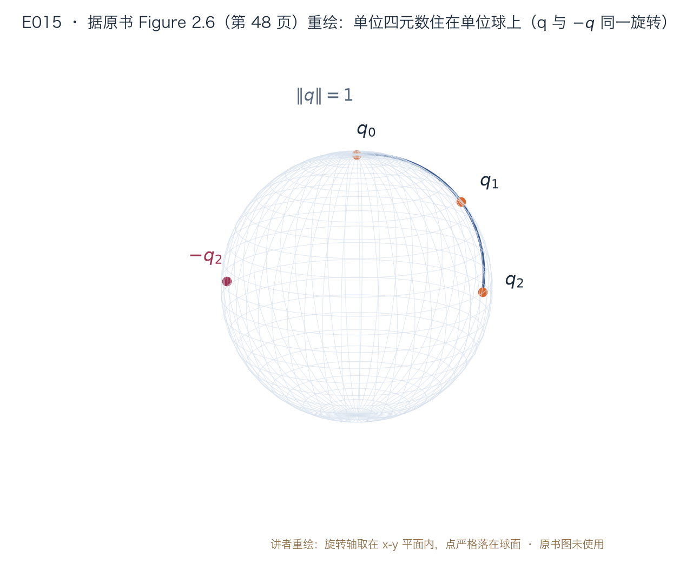
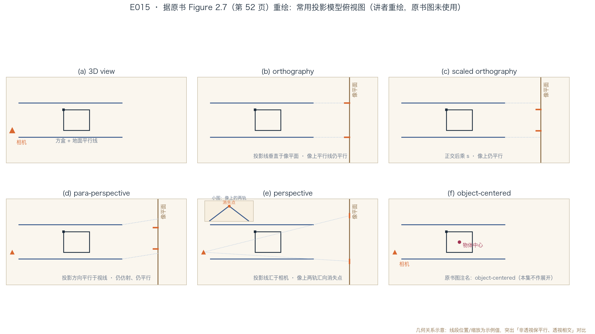

正课 · 07 · 第 2 章 图像形成
3D 到 2D：相机投影的代数
三维旋转三表示 + 投影四模型 · §2.1.2–§2.1.4 前半
四段路线（讲者安排）：① 3D 族谱与自由度阶梯 ② 3D 旋转的三种表示 ③ 投影四模型与消失点兑现 ④ 数值实验与下集切分
导览 · 切分宣布
片尾承诺，今天兑现
E014 留的悬念
上集片尾：三维族谱怎么切，「下集开头见分晓」今天吃到 §2.1.2（第 43–45 页）+ §2.1.3（第 45–51 页）+ §2.1.4 前半（第 51–54 页）
E013 的伏笔
「透视把它搬进画面，投影那集再算」今天 §2.1.4 就兑现：透视投影的消失点公式 + 数值验证
讲者按：内参 K/Ms 与相机矩阵 P=K[R|t] 留给 E016（原书第 55 页起），镜头畸变留 E017（第 63 页起）——切分是讲者安排：E015/E016 的切点在 §2.1.4 内部（逆深度段结束、内参段开始处），不是原书小节边界
族谱 · TABLE 2.2
三维族谱，五级阶梯
变换
矩阵
DoF
保住什么（含下行各条）
平移
[I t]
3
定向 · 长度 · 角度 · 平行 · 直线
刚体（欧氏）
[R t]
6
长度 · 角度 · 平行 · 直线
相似
[sR t]
7
角度 · 平行 · 直线
仿射
[A]3×4
12
平行 · 直线
射影
H̃（4×4）
15
直线
表 2.2 要点（原书第 44 页）：每行也保住下面各行的性质；3×4 矩阵补 [0ᵀ 1] 行即成 4×4；图标画在 2D 但示意 3D 立方体。与 E014 的 2D 表对照：3→6→7→12→15，逐级比 2D 的 2→3→4→6→8 多出 1、3、3、6、7 个自由度（讲者按：多出的是自由参数的个数——如刚体矩阵元从 6 个变 12 个，但 R 受正交约束，自由参数只多 3 个）
前两级 · TRANSLATION / RIGID
平移与刚体：老朋友升维
x′ = x + t，即 x′ = [I t] x̄ —— 式(2.23)，原书第 44 页（I 为 3×3 单位阵；x̄ 是齐次 4 维写法，输出 x′ 是 3 维）
x′ = Rx + t —— 式(2.24)；绕点 c 转：x′ = R(x−c) = Rx − Rc —— 式(2.25)，原书第 44 页
R 是 3×3 正交矩阵：RRᵀ=I 且 |R|=+1（实验：5 组随机 (n̂,θ) 全过）；刚体运动别名 SE(3)（第 44 页）；c 常取相机中心。原书提醒：紧凑地参数化 3D 旋转不是件平常事（第 44 页）——本集大半篇幅都在回答它
中间两级 · SIMILARITY / AFFINE
相似与仿射：一个保角、一个保平行
x′ = sRx + t —— 式(2.26)，原书第 45 页：保角——原书 angles between lines and planes（讲者读作线–线、面–面）
x′ = A x̄，A 是任意 3×4 —— 式(2.27)，原书第 45 页：平行线与平行面经变换仍平行（实验：任意 A 下方向像叉积≈0）
与 2D 同构：A 从 2×3 升到 3×4、点从 2D 升到 3D，同样无除法（讲者对比，非原书内容；式 2.27 原文见第 45 页）。反例（讲者设计的实验）：A=[diag(2,1,1)|0] 保平行但把 45° 夹角压成 26.6°——「保平行」不等于「保角」
顶级 · PROJECTIVE
射影：只保直线
x̃′ = H̃ x̃，H̃ 任意 4×4 —— 式(2.28)，原书第 45 页；归一化后才得非齐次结果 x
别称：3D 透视变换、单应 homography、共线变换 collineation（原书第 45 页）；只保证直线变换后仍是直线
尺度等价（讲者计算）：H̃ 与 2H̃ 归一化后是同一个变换（实验：随机点逐点一致）——15 个自由度 = 16 − 1 个尺度；更细的层级描述见 Hartley & Zisserman (2004, §2.4)（原书第 43 页）
旋转 ① · EULER ANGLES
欧拉角：书直言「坏主意」
依赖顺序
三个绕坐标轴的旋转乘起来：x-y-z 或 x-y-x先转谁后转谁，结果不同——generally a bad idea（原书第 45 页）
万向锁
旋转微变，某个欧拉角可能大幅跳变：参数空间不平滑机器人学称 gimbal lock（脚注 3，第 45 页）
原书因此连公式都不给：感兴趣的读者另查（Faugeras 1993; Diebel 2006，这句话跨第 45–46 页，引文在第 46 页）；但特例反而直观——讲者按：云台 pan-tilt 头这类场景可能天然就是两个转轴（原书脚注 2，第 45 页只说 may be more intuitive）
旋转 ② · AXIS / ANGLE
轴角：把 v 拆成三块
ω = θn̂（轴 n̂、角 θ，3 个数）；v∥ = n̂(n̂·v) = (n̂n̂ᵀ)v —— 式(2.29)：转不动的部分；v⊥ = v − v∥ —— 式(2.30)（原书第 46 页）
v× = n̂ × v⊥ = n̂ × v = [n̂]× v —— 式(2.31)：叉积 = 转 90°；[n̂]× 的矩阵形式 = 式(2.32)（原书第 46 页）
再叉一次 90° 得 −v⊥：[n̂]²× v = −v⊥（原书第 46 页）——[n̂]× 作用下四个方向首尾循环，这是下面一切公式的积木（讲者按：Figure 2.5 下一页画给你看）
旋转 ② · RODRIGUES
几何拼出公式：Rodrigues

据原书 Figure 2.5（第 46 页）重绘 · 原书图未使用 · 代码实跑输出
u = v∥ + cosθ·v⊥ + sinθ·v× → R(n̂,θ) = I + sinθ[n̂]× + (1−cosθ)[n̂]²× —— 式(2.33)–(2.34)，原书第 47 页
实验：θ=2.39 时与逐点旋转一致；代价：表示不唯一——θ 可加 2πk，(n̂,θ) 与 (−n̂,−θ) 同解；存角度制则 90° 倍数可精确表示（第 47 页）
旋转 ② · 小旋转与导数
小旋转：转得越小，线性越准
R(ω) ≈ I + [ω]× —— 式(2.35)，原书第 47 页（θ 用弧度；实验：误差/θ² → 1/√2≈0.707，θ: 0.1→0.001 逐步逼近——讲者推演）
∂Rv/∂ωᵀ = −[v]× —— 式(2.36)，原书第 47 页（实验：‖ω‖=10⁻³ 中心差分 vs −[v]×，最大偏差 1.7e-3）
式(2.36) 是小旋转极限下 Rv 对 ω 的导数——以后做非线性优化、最小化重投影误差时，雅可比矩阵就是它（讲者按：§11 预告；原书第 47 页明说 this is handy when we want to compute the derivative）
旋转 ② · 指数扭转
有限角旋转 = 无穷小旋转的极限
R(n̂,θ) = limk→∞ (I + [θn̂]×/k)k = exp[ω]× —— 式(2.37)，原书第 47 页（Murray, Li, and Sastry 1994）
exp[ω]× 展开，用 [n̂]k+2× = −[n̂]k×（k>0）循环合并 → I + sinθ[n̂]× + (1−cosθ)[n̂]²× —— 式(2.38)：回到 Rodrigues（第 48 页）
实验（k=10⁶）：两条路与 Rodrigues 最大偏差 ≈2.1×10⁻⁶。名词落地（第 48 页）：旋转群叫 SO(3)；增量 ω 的李代数原书记作 se(3)——讲者按：标准是 so(3)，se(3) 属 SE(3)，按笔误理解
旋转 ③ · UNIT QUATERNIONS
单位四元数：住在球面上的旋转

据原书 Figure 2.6（第 48 页）重绘 · 原书图未使用 · 代码实跑输出
q = (v, w) = (x, y, z, w) 是单位 4 向量，‖q‖=1；对径点 −q 与 q 是同一个旋转（dual covering 双重覆盖，Figure 2.6，第 48 页）——除这层二对一，表示唯一且连续；来源：q = (sin(θ/2)n̂, cos(θ/2)) —— 式(2.39)；代回 Rodrigues 得 R = I + 2w[v]× + 2[v]²× —— 式(2.40)（原书第 49 页，实验：R(q) 与 Rodrigues 逐点一致）
旋转 ③ · 四元数代数
一套代数，复合与插值都好算
q₂ = q₀q₁ = (v₀×v₁ + w₀v₁ + w₁v₀, w₀w₁ − v₀·v₁) —— 式(2.42)，原书第 49 页；且 R(q₂) = R(q₀)R(q₁)（实验：复合一致、交换顺序结果不同）
slerp（Algorithm 2.1，原书第 50 页）：qr = q₁/q₀ → θr = 2tan⁻¹(‖vr‖/wr) → qα = (sin(αθr/2)n̂r, cos(αθr/2)) → q₂ = qαq₀
求逆 = 只翻 w 的号：R(q⁻¹)=Rᵀ（式 2.43，第 49 页）；书另给可得相近结果（comparable results）的公式式(2.44)–(2.45)，q₀、q₁ 相近时须小心——书偏爱 arctangent 求角；若 wr<0 先取 −qr（第 50 页）
旋转 ④ · 怎么选
表示没有最优，只有合身
轴角 / ω
最小表示：免再归一化；角度制直观（90° 一听就懂）；弧度下导数好算——式(2.36)原书第 51 页
四元数
连续无断点：跟拍平滑运动的相机不会跳变；插值、刚体链乘方便原书第 51 页（Murray, Li, and Sastry 1994; Bregler and Malik 1998）
书作者的偏好：用四元数存姿态、用增量旋转做更新（§11.2.2，原书第 51 页）——讲者按：这是工程答案不是数学答案；讲者补充：欧拉角也有自留地——云台 pan-tilt 这类可能天然两轴的场景（原书脚注 2，第 45 页只说 may be more intuitive）
投影 ① · ORTHOGRAPHY
正交投影：扔掉 z 就完事
x = [I2×2 0] p —— 式(2.46)，原书第 51 页（p 记 3D 点，x 记 2D 点）；齐次版 x̃ = [1 0 0 0; 0 1 0 0; 0 0 0 1] p̃ —— 式(2.47)：扔 z、保 w（实验：3 组点两式一致）
不做除法、平行线永远平行——最朴素的投影（讲者按：因此也没有灭点）
适用边界（第 51 页）：长焦（telephoto）镜头、物体深度相对物距很浅（Sawhney and Hanson 1991）时的近似；对 telecentric（远心）镜头才是精确模型（Baker and Nayar 1999, 2001）
投影 ② · 六模型全景
一张图看全：谁保平行、谁相交

据原书 Figure 2.7（第 52 页）重绘 · 原书图未使用 · 代码实跑输出
原书图注（第 52 页）：地面平行线与方盒竖边在非透视投影里仍保持平行（讲者按：这张图就是「消失点出现与否」的分界线；面板 (e) 投影线汇于相机一点，像上平行线才会相交——下一页兑现；(f) 为图注名 object-centered，本集不展开）
投影 ③ · SCALED ORTHO / PARA
仿射家族：补上尺度再补方向
x = [sI2×2 0] p —— 式(2.48)，原书第 53 页：世界坐标（米）缩放到传感器（像素）；s 可逐帧变
para-perspective：沿指向物体中心的视线，平行投到平行于像平面的参考面 → 常规透视缩放，合成仍是仿射
远距重建：pose 用最小二乘（§11.2.1）、结构运动用因式分解 SVD（Tomasi and Kanade 1992，§11.4.1）；para 更准又不破坏因式分解（Poelman and Kanade 1997）——式(2.49)，原书第 53 页（讲者按：参考面惯例取过物体中心，原书未指明位置）
投影 ④ · PERSPECTIVE
真透视：除以自己的 z
x̄ = Pz(p) = (x/z, y/z, 1) —— 式(2.50)，原书第 54 页；齐次版 x̃ = [1 0 0 0; 0 1 0 0; 0 0 1 0] p̃ —— 式(2.51)：扔 w
消失点（式 2.50 推论）：3D 平行线方向 d（dz ≠ 0）时，像上收敛于 (dx/dz, dy/dz)——λ→∞ 像点 → 该极限（讲者推演；图注第 52 页只说非透视保平行，「只有透视破坏」是讲者归纳）
两条兑现（实验）：①透视保直线——相对叉积 1.02×10⁻¹⁶；②E013 伏笔——方向 (0,0,1) 的两条平行线像收敛于 vp=(0,0)：像距 0.250→1.7×10⁻⁴，像方向叉积 0.006——「投影那集再算」，今天算完了
投影 ⑤ · 图形学视角
4×4 矩阵：第三行藏着深度
先投到归一化设备坐标 (x,y,z)∈[−1,1]²×[0,1]，再 viewport 到像素；透视部分用 4×4 —— 式(2.52)，原书第 54 页
znear=1、zfar→∞、第三行翻号 → 第三元 = 1 − 1/z，是 disparity 的仿射函数（d = 1 − 第三元）——讲者推演
原书第 54 页称其 becomes the inverse depth（讲者：差一个仿射换算）；第三行留着是因 z-buffer 要深度；户外相机逆深度「通常」更良态（原书正文无引文；O–K 1993 只挂 disparity 定义）；已知深度/视差时，可用满秩 4×4 的逆直接映回 3D——式(2.64)（第 60 页，E016 讲）
实验 · 数值验证
24 条断言，条条对数
族谱 + 旋转
5 级保性质（含反例）· Rodrigues 几何构造逐点一致 · 小旋转误差/θ² → 1/√2 · 导数差分 1.7e-3 · 指数扭转两路 ≈2.1e-6 · 四元数乘法/求逆/slerp讲者设计，非原书内容
投影
正交两式一致 · 缩放正交与 para 保平行（透视不保）· 透视保直线 · 消失点收敛 · 逆深度 d = 1 − 第三元 = 1/z3 张重绘图（Figure 2.5/2.6/2.7）入册；冷启动 PNG md5 与暖跑一致
三句话带走：①矩阵越自由，保的性质越少——E014 的主线在 3D 照样成立；②3D 旋转没有完美表示——优化用增量 ω、插值用四元数、云台这类场景可考虑欧拉角；③非透视的仿射族保平行，透视拿平行换真实——消失点就是那笔交易的价格（讲者归纳）
词汇 · 本集新词
今天入册的词汇卡
SE(3) / SO(3)
3D 刚体运动群 / 3D 旋转群原书第 44 页 / 第 48 页
se(3)（原书写法）
增量旋转 ω 的李代数；讲者按：标准记号 so(3)，se(3) 通常留给 SE(3) 刚体运动原书第 48 页
万向锁
gimbal lock：欧拉角参数化不平滑脚注 3，原书第 45 页
双重覆盖
dual covering：q 与 −q 同一旋转原书第 48 页
slerp
球面线性插值（Algorithm 2.1）原书第 50 页
para-perspective
沿视线方向的平行投影 + 整体缩放式(2.49)，原书第 53 页
讲者归纳：本集公式都为两件事——物体在哪朝哪转写成矩阵，落在像上哪儿写成投影矩阵——透视再除以 z。下一集补下一块积木（畸变在 E017）。
NEXT · 内参在门口
读原书§2.1.2–§2.1.4 前半（原书第 43–54 页），对照 Table 2.2（第 44 页）、Figure 2.5/2.6/2.7（第 46/48/52 页）与 Algorithm 2.1（第 50 页）
作业用式(2.41) 手算 q=(0, 0, sin45°, cos45°) 的 R(q)，验证它等于绕 z 轴 90° 的 Rodrigues 矩阵；再取方向不平行于像平面（dz≠0）的两条平行线，亲手算一次消失点 (dx/dz, dy/dz)
下一集E016 相机内参与外参：传感器齐次 Ms → 标定矩阵 K → 相机矩阵 P=K[R|t]、上三角 K 的五个参数（原书第 55–63 页，至 §2.1.5 之前——切分为讲者安排）